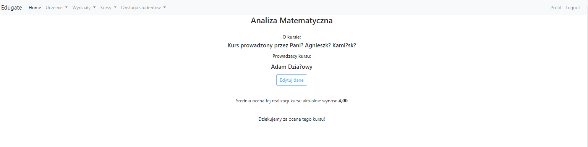
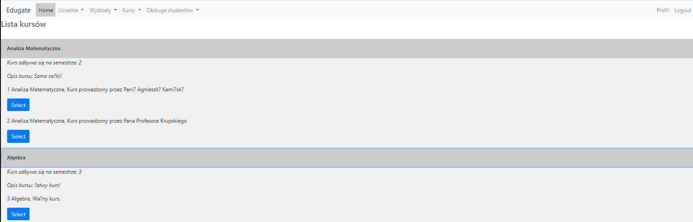
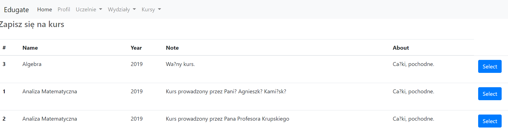
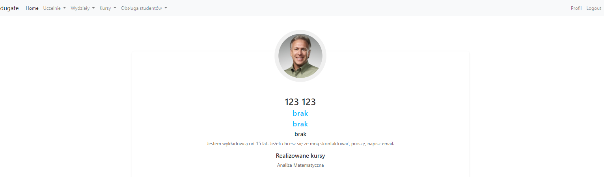

Edugate
GithubAbout project
This 4-man team project was an attempt to create educational portal for both university students and university teachers. Connecting Spring and Hibernate for the first time was quite a challenge. Team has taken few weaks to determine how technology
works and what is possible to achieve in 3 months period.

Top of course view
Web service allowed for teachers to put resources online, release updates on courses and manage course students. Students could share their opinions on courses, rate them, sign for courses and browse data about them. We haven't implemented few planned functionalities but service in it's final state was usable. I've managed the connection with database, data mapping and custom security module in Spring aswell as the big chunk of controllers and Ajax.
 Bottom of course view
Bottom of course view
 Bottom of course view  Sign for course view  Example profile